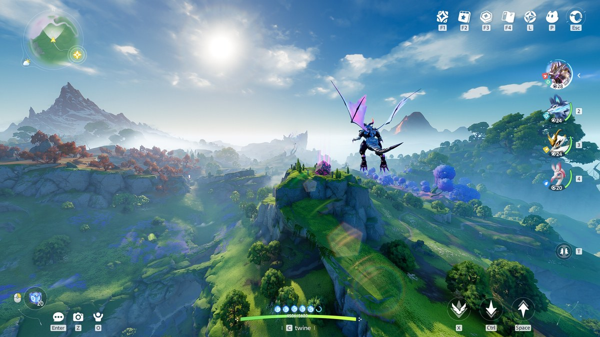
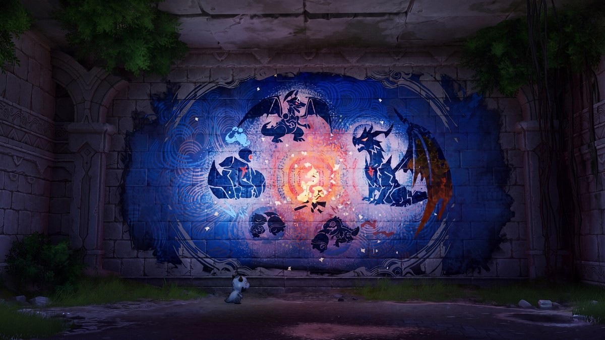
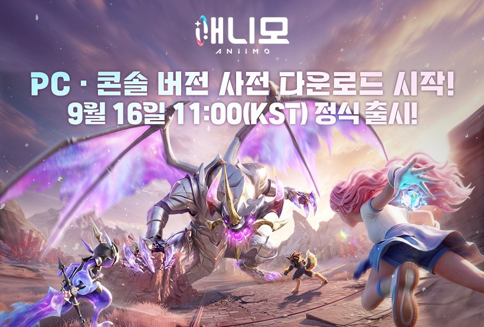
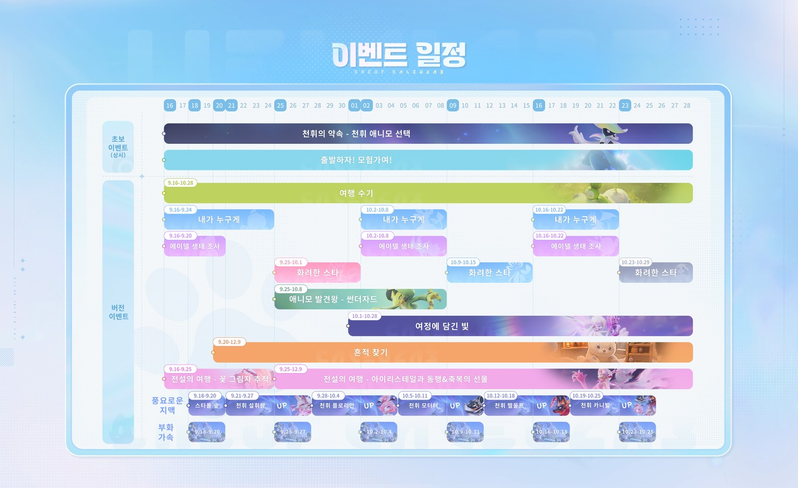
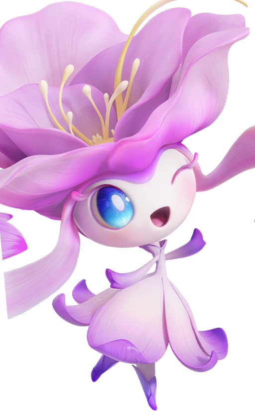

애니모 아이리스테일 얻는 법, 전설의 여행 일정부터 꽃잎 미리 모으는 법까지
애니모 하시는 분들, 요 며칠 사이 '아이리스테일'이라는 이름 한 번쯤은 보셨을 거예요. 근데 막상 잡으려고 검색해보면 방법이 딱 안 나와서 답답하셨을 텐데요, 결론부터 말씀드리면 지금(9월 20일, 일요일)은 대부분의 플레이어에게 아직 아이리스테일을 만날 수 있는 시점이 아니에요. 9월 25일(금)부터 시작하는 「전설의 여행 - 아이리스테일과 동행&축복의 선물」 이벤트를 기다려야 하거든요. 그렇다고 손 놓고 있어도 되는 건 아니고, 이 개체와 얽힌 재화는 벌써부터 조용히 쌓이고 있더라고요. 다만 미리 말씀드리면, 완전한 공략은 9월 25일 이벤트가 실제로 열려야 나올 수 있어요 — 오늘 이 글에서 확실히 챙겨가실 수 있는 건 '지금부터 미리 모아 두는 법'까지예요. 아이리스테일이 뭔지부터 지금 왜 못 얻는지, 미리 챙겨둘 수 있는 게 뭔지까지 순서대로 정리해볼게요.

출처: 애니모 스팀 공식 스토어
PC·콘솔은 9월 16일, 모바일은 9월 23일에 이미 정식 출시했어요. 아이리스테일은 그 이후 이어지는 이벤트에서 만나게 되는 개체예요.
애니모 아이리스테일이 대체 뭔가요
아이리스테일은 애니모 안에서도 '전설' 등급으로 분류되는 특수 개체예요. 9월 3일(목) 공식 뉴스센터에 올라온 '개발팀의 편지'에서 정식판 설계를 직접 밝혔는데요, 베타 때 애니팟을 반복 투척하던 확률형 방식이 아니라, 재료를 모아서 '전설 애니팟'을 만들고 전용 스토리에서 딱 한 번만 아이리스테일과 만나는 구조로 정식판에서 바뀌었다고 해요. 확률에 기대는 뽑기가 아니라 정해진 절차를 밟아가는 방식이라, 준비만 잘 해두면 오히려 놓칠 일이 줄어드는 셈이랍니다.

출처: 애니모 스팀 공식 스토어
에이델 대륙 곳곳에는 이런 오래된 벽화가 남아 있어요. 아이리스테일도 애니팟을 던져 잡는 개체가 아니라, 전용 스토리로 만나도록 새로 설계됐어요.
9월 20일 지금은 왜 대부분 못 얻는 걸까요
지금(9월 20일) 대부분이 못 얻는 이유는 간단해요 — 아이리스테일을 실제로 만나는 본편 이벤트가 아직 시작 전이거든요. 애니모는 PC·콘솔이 9월 16일(수), 모바일이 9월 23일(수)에 이미 정식 출시했는데요, 아이리스테일 관련 이벤트는 출시와 동시에 열리는 게 아니라 두 단계로 나뉘어 있습니다.

9월 16일 오전 11시(KST)에 이미 정식 출시가 됐고, 그 뒤로 이벤트가 순차로 이어지는 구조예요.
먼저 출시일인 9월 16일(수)부터 「전설의 여행 - 꽃 그림자 추적」이라는 앞단 이벤트가 9월 25일(금)까지 진행되고, 그게 끝나야 본편 격인 「전설의 여행 - 아이리스테일과 동행&축복의 선물」이 9월 25일(금)부터 12월 9일(수)까지 이어져요. 즉 지금은 앞단 이벤트만 끝나가는 시점이에요. 공식 출시 공지에 실린 이벤트 일정 이미지를 보면 이 흐름이 한눈에 보여요.

분홍색 막대가 「전설의 여행」 라인이에요. 9.16~9.25는 '꽃 그림자 추적', 9.25~12.9는 '아이리스테일과 동행&축복의 선물'로 이어져요.
다만 '대부분'이라고 표현한 이유가 있어요. 스팀 도전과제 「Rainbow of the Ground」(설명에 'Team up with Irisalis'라고 적혀 있어요. 한국어 업적명은 스팀에서 따로 제공하지 않아요) 달성률을 확인해보니 9월 20일 기준 0.1%였어요. 0%가 아니라는 건 이미 아이리스테일과 만난 플레이어가 실재한다는 뜻이거든요. 다만 이 극소수가 정확히 어떻게 먼저 만났는지는 공식이 밝힌 게 없어요 — 메인 스토리를 끝까지 밀어붙인 경우라는 해석이 해외 공략에 있긴 한데, 확정된 설명은 아니에요.
지금부터 꽃잎이 모이고 있다는 증거가 있어요
네, 이벤트가 시작되기도 전인데 아이리스테일과 관련된 재화는 벌써 쌓이고 있어요. 정식 출시 직후에 나온 첫 패치노트(v1.0.3535596.0)를 보면 수정 항목 중 하나로 이런 문구가 있었어요.
"모험가님이 획득한 「아이리스테일 꽃잎」이 정상적으로 집계되지 않는 문제를 수정했습니다."
버그 수정 항목이라는 게 오히려 힌트인데요, 존재하지도 않는 재화의 집계 오류를 고칠 리는 없잖아요. 즉 '아이리스테일 꽃잎'은 이벤트 시작 전인 지금도 이미 살아있는 재화라는 뜻이에요. 정확히 어느 화면에서 모이는 중인지는🔍 인게임 UI 확인 필요 아직 직접 확인은 못 했지만, 최소한 9월 25일을 마냥 기다리지만 말고 지금부터 슬슬 신경 써도 되는 재화라는 건 분명해 보여요. 다만 개발팀의 편지가 처음 언급한 재료 이름은 「전설의 증표」였는데, 이 '아이리스테일 꽃잎'이 같은 재화를 가리키는 다른 이름인지는 공식이 아직 못 박지 않았어요. 같은 것으로 보이긴 하지만, 확정된 설명은 아니라는 점은 알아두시면 좋겠어요.
꽃잎은 어디서 나오는 걸까요
해외 공략 사이트들이 정리한 바로는, 아이리스테일 꽃잎은 한 가지 콘텐츠가 아니라 여러 곳에서 골고루 나온다고 해요.
- 흔적 찾기 이벤트 참여
- 메인 스토리 퀘스트 진행 — 「의식 준비」 퀘스트부터 지급이 시작되고, 후반부 퀘스트는 완료당 최대 2개까지 나온대요
- 여정(서브 퀘스트) 퀘스트
- 맵에서 줍기
- 엘리트 개체 첫 처치 보상
- 엘리트 모험가 도전 클리어
- 수집 은색 배지 달성
- 천휘 애니모 포획
이 여덟 가지는 해외 공략 사이트가 정리해둔 목록이라, 어느 정도는 믿고 참고하시면 됩니다. 다만 필요한 정확한 수량에 대해서는 얘기가 다른데요, 한 해외 공략에서 99개라는 숫자를 정리해둔 걸 봤지만, 이건 딱 한 곳에서만 나온 수치예요. 그대로 믿고 계획 세우시기보다는 인게임에서 직접 확인하시는 게 좋아요.🔍 필요 수량 인게임 확인 필요
전설 애니팟은 어떻게 얻을 수 있나요
공식이 확인해준 건 '재료를 모아 전설 애니팟을 만들고, 전용 스토리에서 딱 한 번 아이리스테일과 만난다'는 것까지예요. 그런데 정확히 어떤 경로로 손에 넣는지는 자료마다 정리가 다르더라고요. 표로 비교해볼게요.
| 어디서 | 어떻게 정리돼 있나 |
|---|---|
| 공식(개발팀의 편지) | 재료(전설의 증표)를 모아 전설 애니팟을 만들고, 전용 스토리에서 단 한 번 아이리스테일과 만난다 |
| 국내 한 팬 도감 | 전설 애니팟을 메인 여정 최종 보상 / 특정 메인 챕터 완료 시 얻는 것으로 정리 |
| 해외 공략 사이트들 | 아이리스테일 꽃잎을 모아 전설 애니팟을 직접 만드는 것으로 정리 |
보시는 것처럼 '보상으로 받는다'는 정리와 '재료 모아 직접 만든다'는 정리가 갈려요. 그래서 지금 확실하게 말씀드릴 수 있는 건 딱 여기까지예요. 어느 쪽이 맞는지는 9월 25일 이벤트가 실제로 열리면 인게임에서 직접 확인하는 게 제일 확실할 것 같아요.
헷갈리기 쉬운 것 세 가지, 미리 짚고 갈게요
아이리스테일 관련해서 자료를 찾다 보면 은근히 헷갈리는 지점이 세 군데 있어요. 미리 짚고 가면 나중에 삽질을 줄일 수 있습니다.
첫째, 여정 끝에 받는 '꽃 알'은 아이리스테일이 아니에요. 이 꽃 알을 아이리스테일로 이어지는 알로 오해하시는 경우가 있던데, 천휘 형태 플러터·왈츠페탈 계열이라는 얘기가 있답니다. 완전히 단정할 수 있는 수준은 아니라 '~일 수 있다' 정도로만 알아두시면 좋겠어요.
둘째, 이름이 너무 비슷해요. 플러터(영문 Iris)·왈츠페탈(영문 Irisal)·아이리스테일(영문 Irisalis), 이 셋이 이름도 생김새도 비슷해서 해외 공략을 그대로 옮기다 보면 자주 섞이더라고요. 공식 위키 한/영 도감으로 대조해보니 확실히 다른 개체였어요.

출처: 애니모 공식 위키 - 플러터 · 애니모 공식 위키 - 왈츠페탈
꽃잎 머리에 비슷한 실루엣이라 해외 공략을 옮겨 적다 보면 아이리스테일까지 헷갈릴 만하더라고요.
셋째, 애니모는 한 번 놓치면 되돌릴 수 없는 선택이 여럿이에요. 개발팀의 편지에서도 아이리스테일과의 만남을 '단 1회'라고 못 박았거든요. 되돌릴 수 없는 일회성 이벤트인 만큼 확실히 준비하고 들어가시는 편이 마음 편하실 거예요.
9월 25일 전에 해 둘 것 — 체크리스트
이벤트가 열리기 전까지 챙겨두면 좋은 건 크게 다섯 가지예요.
- 오늘(9월 20일) 시작한 「흔적 찾기」 이벤트 참여해두기 — 공식 일정표에 9.20~12.9로 잡혀 있는데, 해외 공략이 적어둔 꽃잎 이벤트 기간이랑 날짜가 정확히 겹쳐요. 같은 이벤트로 보이지만 이름까지 완전히 같다고 단정할 순 없으니 인게임 이벤트 탭에서 한 번 확인해보세요.
- 메인 스토리·여정 밀어두기 — 꽃잎이 이 두 곳에서 나오니까 미리 진행해두면 시작하자마자 여유가 생겨요.
- 엘리트 개체 첫 처치분 챙기기 — 처음 잡는 엘리트는 다시 못 챙기니 마주칠 때마다 놓치지 마세요.
- 꽃잎 수량 확인 — 가방 → 퀘스트 아이템 계열에서 지금 몇 개 모였는지 한 번 들여다보세요.
- 레벨·파티 정비 — 전용 스토리로 진행되는 만큼, 평소 쓰던 파티 컨디션을 미리 점검해두면 좋아요.
자주 묻는 질문
Q. 지금(9월 20일) 시작해도 늦지 않나요?
네, 전혀 안 늦었어요. 본편 이벤트가 12월 9일(수)까지 이어지니 기간 자체가 넉넉한 편이고요, 지금은 관련 정보가 하루가 다르게 쌓이는 시기라 오히려 헤맬 일이 줄어든 편이랍니다.
Q. 무과금으로도 아이리스테일을 얻을 수 있나요?
개발팀의 편지에서 확률형 뽑기를 재료 수집 방식으로 바꿨다고 밝힌 만큼 과금 부담은 예전보다 줄어들 가능성이 있어요. 다만 재료를 얼마나 모아야 하는지 같은 구체적인 비용은 아직 공개 전이라 단정하긴 어려워요.
Q. 이벤트를 놓치면 아이리스테일을 영영 못 얻게 되나요?
이 부분은 공식이 밝힌 내용이 없어요. 이벤트 기간이 12월 9일까지로 꽤 길게 잡혀 있긴 하지만, 놓쳤을 때 재도전 기회가 있는지는 확인이 필요한 상태라 섣불리 말씀드리지는 않을게요.
애니모 아이리스테일 정리
정리하고 넘어가자면, 아이리스테일은 애니팟을 던지는 뽑기가 아니라 재료를 모아 전설 애니팟을 만들고 전용 스토리에서 단 한 번 만나는 개체고요, 그 본편 이벤트는 9월 25일(금)부터 12월 9일(수)까지예요. 근데 관련 재화인 '아이리스테일 꽃잎'은 패치노트 수정 항목으로 볼 때 이미 지금부터 쌓이고 있으니, 9월 25일까지 남은 시간 동안 메인 스토리·여정·엘리트 처치부터 미리 챙겨두시면 좋을 것 같아요.
✔ 애니모 같이 보기 좋은 내용
· 애니모 전투 티어표 정리, 1티어 애니모 추천까지 짚어봤어요
· 애니모 캠핑카 생활 티어표 추천, 홈 능력 13종 정리
· 애니모 용어 총정리, 천휘 애니모 획득부터 희귀도 평가 차이부터 선천 후천 어빌리티, 옵시디언까지
참고한 곳
· 애니모 공식 뉴스센터 - 개발팀의 편지
· 애니모 공식 뉴스센터 - 출시 공지
· 스팀 애니모 공지사항 - 패치노트
· 스팀 애니모 공식 업적 통계